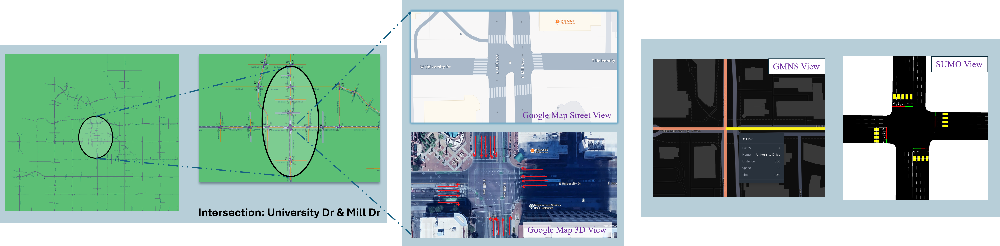

Quick Start Guide
Quick Python Example
Note
This quick start guide assumes you have a valid UTDF file and the required dependencies installed.
The following example uses a sample UTDF file from the Bullhead City, AZ dataset. You can replace it with your own UTDF file as needed.
The example below uses automatic geocoding by default. You can choose to geocode automatically ::ref:: automatic_geociding or manually ::ref:: manual_geocoding as per your requirement.
Prepare your UTDF file
Please note that file name does not need to be UTDF.csv, it can be any name.
1import utdf2gmns as ug
2
3region_name = " Bullhead City, AZ" # Name of the region the UTDF file represents
4path_utdf = r"datasets\data_bullhead_seg4\UTDF.csv" # Path to the UTDF file
Initialize the UTDF2GMNS
1# Initialize the UTDF2GMNS object with the UTDF file and region name
2net = ug.UTDF2GMNS(utdf_filename=path_utdf, region_name=region_name, verbose=False)
Geocoding Intersections (Use Automatic Geocoding)
1# Geocode intersections using automatic geocoding method
2
3# dist_threshold: The distance threshold for geocoding (default is 0.01 km), unit is km
4net.geocode_utdf_intersections(dist_threshold=0.01)
Geocoding Intersections (Use Manual Geocoding)
1# Geocode intersections using manual geocoding method
2# This method could provide more accurate geocoding results,
3# Bit it requires user to provide a single intersection coordinate.
4
5# INTED is the intersection ID in UTDF file
6# x_coord and x_coord are the coordinates of the intersection in decimal degrees (Latitude and Longitude)
7
8single_coord={"INTID": "1", "x_coord": -114.568, "x_coord": 35.155}
9net.geocode_utdf_intersections(single_intersection_coord=single_coord)
Create GMNS links
1# Create GMNS links (polygon-link or line-link)
2# is_link_polygon: If True, create polygon links; if False, create line links (default is False)
3net.create_gmns_links(is_link_polygon=False)
Save GMNS Network (UTDF To GMNS Format)
This step will convert the UTDF network to GMNS format and save it to CSV and json files. Specifically, it will save the following files:
nodes.csv: Contains information about the nodes in the network.
links.csv: Contains information about the links in the network.
signal.json: Contains information about the signals of each signalized intersection in the network.
utdf_network.csv: Contains information from the UTDF file regarding the network configuration and settings.
utdf_nodes.csv: Contains information from the UTDF file regarding the nodes in the network.
utdf_links.csv: Contains information from the UTDF file regarding the links in the network.
utdf_lanes.csv: Contains information from the UTDF file regarding the lanes in the network.
utdf_phases.csv: Contains information from the UTDF file regarding the phases in the network.
utdf_timeplans.csv: Contains information from the UTDF file regarding the time plans in the network.
1# Convert UTDF network to GMNS format (CSV and JSON files)
2net.utdf_to_gmns(incl_utdf=True)
Convert UTDF Network to SUMO (GMNS To SUMO Format)
Since we have already converted the UTDF network to GMNS format, we can now convert it to SUMO format. This step will save the following files:
nod.xml: Contains information about the nodes in the SUMO network.
edg.xml: Contains information about the edges in the SUMO network.
con.xml: Contains information about the connections in the SUMO network.
flow.xml: Contains information about the flow in the SUMO network.
add.xml: contains loop detectors information.
net.xml: Contains information about the network in the SUMO network.
rou.xml: Contains information about the routes in the SUMO network.
.sumocfg: Contains configuration information for the SUMO network.
1# Convert UTDF network to SUMO format (SUMO files)
2
3# sumo_name is the name of the SUMO network (default is "utdf_to_sumo")
4net.utdf_to_sumo(sumo_name="", show_warning_message=True)
Visualize the Network
- We provide two methods to visualize the network: Keplergl and Matplotlib.
Keplergl: A powerful tool for visualizing large-scale geospatial data.
Matplotlib: A widely used library for creating static, animated, and interactive visualizations in Python.
1net_map = ug.plot_net_mpl(net, save_fig=True, fig_name="Bullhead_City.png")
2net_map = ug.plot_net_keplergl(net, save_fig=True, fig_name="Bullhead_City.html")
Signalized Intersection Calculation and Visualization (Optional)
This is the optional step to generate each signalized intersections and visualize them using Sigma-X engine. For large networks, this step may take a long time. (The code will print out total time taken for this step)
1# Generate signalized intersections and visualize them using Sigma-X engine
2net.utdf_to_gmns_signal_ints()
Quick Example (Full Code)
1import utdf2gmns as ug
2
3
4if __name__ == "__main__":
5
6 region_name = " Bullhead City, AZ"
7 path_utdf = r"datasets\data_bullhead_seg4\UTDF.csv"
8
9 # Step 1: Initialize the UTDF2GMNS
10 net = ug.UTDF2GMNS(utdf_filename=path_utdf, region_name=region_name, verbose=False)
11
12 # Step 2: Geocode intersection
13 # if user manually provide single intersection coordinate, such as:
14 # single_coord={"INTID": "1", "x_coord": -114.568, "y_coord": 35.155}
15 # Intersections will geocoded base on this point (Recommended Method)
16 net.geocode_utdf_intersections(single_intersection_coord={}, dist_threshold=0.01)
17
18 # Step 3: create network links: user can generate polygon-link or line-link
19 net.create_gmns_links(is_link_polygon=False)
20
21 # Step 4: convert UTDF network to GMNS format (csv)
22 net.utdf_to_gmns(incl_utdf=True)
23
24 # Step 5 (optional): convert UTDF network to SUMO
25 net.utdf_to_sumo(sumo_name="", show_warning_message=True)
26
27 # Step 6 (optional): visualize the network
28 # net_map = ug.plot_net_keplergl(net, save_fig=True, fig_name="Bullhead_City.html")
29 # net_map = ug.plot_net_mpl(net, save_fig=True, fig_name="Bullhead_City.png")
30
31 # (Optional) Sigma-X engine generate each signal intersection with visualization
32 # net.utdf_to_gmns_signal_ints()
Design Framework
The Design Framework of the package is based on the following principles:

Illustration of Selected Intersection
We select one intersection from the Tempe City, AZ, the name if intersection is: University Dr & Mill Ave. We show to intersection in details:

Google street view
Google 3D view
GMNS view (Keplergl or Matplotlib, ect…)
SUMO view
{kind=link}